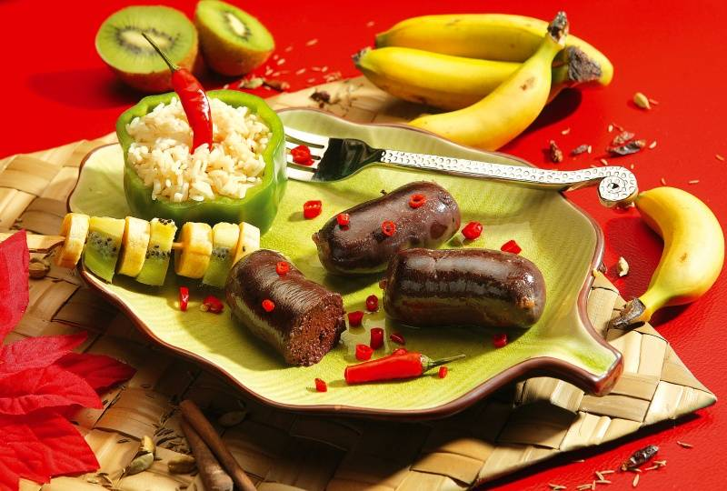

Le Boudin Noir Antillais
Incontournable absolu des fêtes de fin d'année et des apéritifs dominicaux, le boudin-noir créole est une véritable pièce d'orfèvrerie culinaire. Plus petit, plus léger et infiniment plus épicé que son cousin européen, il se déguste traditionnellement chaud, à la main, en pinçant le boyau.
Ce emblème de la convivialité antillaise se distingue par sa texture onctueuse et son bouquet d'aromates locaux qui réveille les papilles sans jamais masquer la délicatesse de sa préparation artisanale.
L'art et les secrets du Boudin créole
La grande différence du boudin antillais réside dans l'utilisation de la mie de pain rassie (ou de biscuits de mer) fondue dans du lait ou du bouillon, ce qui lui donne cette texture incroyablement douce et fondante. Contrairement au boudin classique, on n'y trouve pas de gros morceaux de gras.
Le secret réside surtout dans son assaisonnement d'une richesse incomparable. On prépare une "liqueur" aromatique intense composée de cives (oignons pays), d'ail, de thym, de persil, de clous de girofle et surtout de piment antillais finement dosé, associés au fameux "bois d'inde" (la feuille du quatre-épices) qui lui donne son identité unique.
Le montage se fait à la main dans des boyaux naturels, ficelés à intervalles réguliers pour former de petites portions d'apéritif. L'étape la plus délicate est la cuisson : le bouillon doit frémir doucement sans jamais bouillir, sous peine de voir les boudins éclater. Une fois cuits, on les badigeonne d'un filet d'huile pour leur donner un aspect brillant irrésistible.